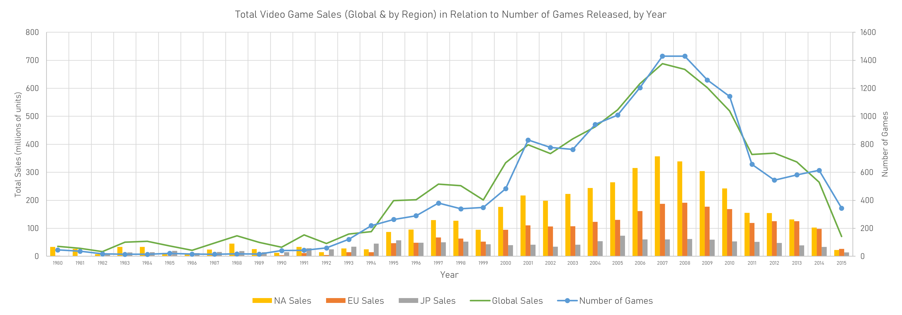
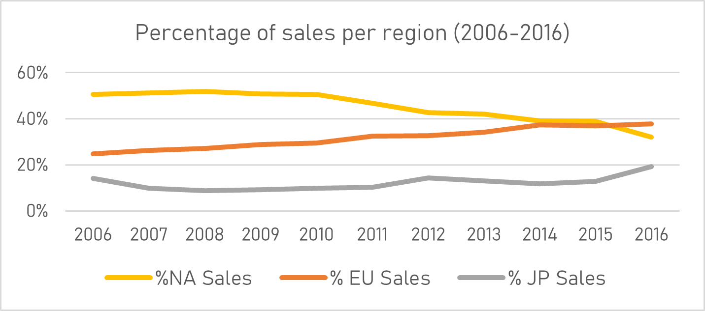
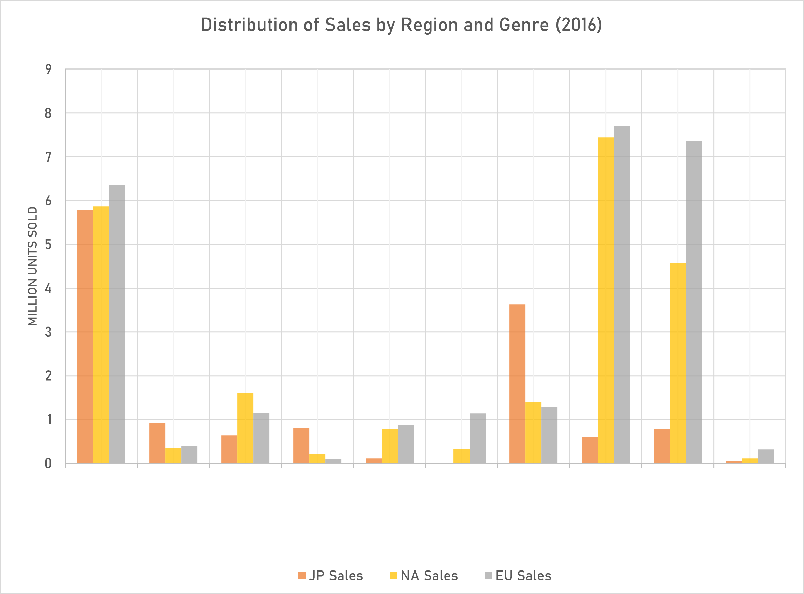
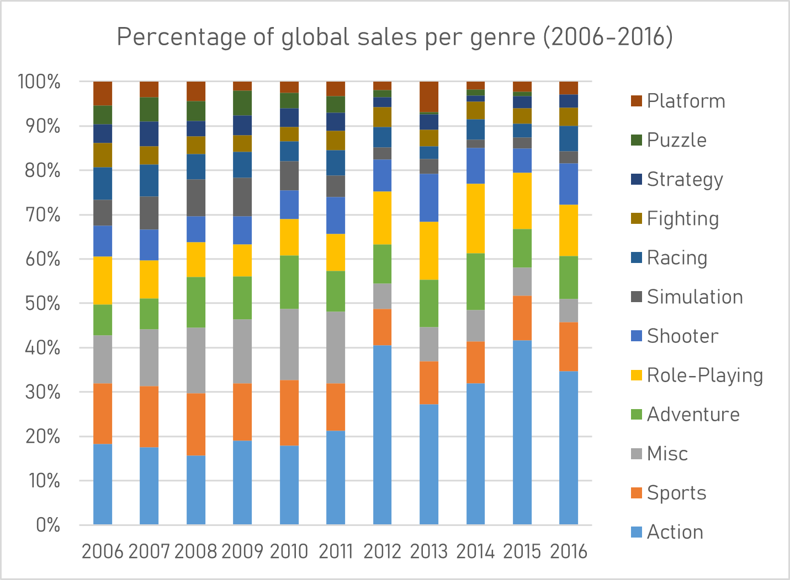

Video Games Sales Trends Analysis
GameCo’s Marketing Strategy
Analysis objective
Provide strategic recommendations for GameCo’s 2017 marketing strategy by drawing insights from historical data on global and regional market trends for console and PC games released between 1980 and 2016.
Assumption
Sales patterns across geographic regions are assumed to have remained sufficiently constant over time to support historical comparison.
Sales trends and market patterns




Key insights
- There is a positive correlation between the number of games released and total sales: more releases generally corresponded with a higher total number of units sold.
- Only about 10% of games achieved sales significantly above the mean, and only around 100 titles sold more than 3 million copies worldwide. High global sales were concentrated among relatively few titles.
- Sales attributed to games released in 2008 represented the dataset’s peak. Lower recorded sales for later releases may reflect incomplete capture of digital distribution and mobile gaming.
- Europe showed sustained growth and, by 2016, represented a larger share of sales than North America. Japan’s share increased slightly.
- Action games were the best-selling genre globally in 2016. Shooter games performed particularly strongly in North America and Europe, while sports titles were also strong in Europe. In Japan, role-playing and adventure games followed action in popularity.
Recommended actions
- Invest in targeted marketing in Europe, emphasizing sports, shooter, and action games that demonstrate strong recent regional demand.
- Establish a systematic process for acquiring mobile-game and digital-distribution sales data, which are incompletely represented in the dataset.
- Support research on the relationship between gender and game consumption to identify ways to reduce participation and spending gaps.
- Incorporate research on women’s experiences in online and first-person-shooter communities into product and community strategies, particularly in relation to harassment and long-term engagement.
Dataset
The analysis uses data published by VGChartz on 16,339 console and PC games released between 1980 and 2016. Fields include game name, genre, publisher, year of release, global sales, and sales in North America, Europe, Japan, and other regions.
Limitations
VGChartz notes that the growing digital market makes some recent sales estimates less representative of overall performance. The dataset has limited regional coverage outside the named markets; it excludes buyer demographics, game-price information, and comprehensive mobile and digital sales data.
Tools
Microsoft Excel was used for data cleaning, exploratory analysis, pivot-table analysis, and data visualization.